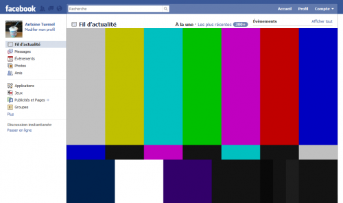

31 mai 2010
Au revoir Facebook ! 30 Alternatives
De jour en jour Facebook fait la polémique, que ce soit pour le non-respect de la vie privée en partageant nos informations avec des entreprises, le piratage des comptes ou encore les "apéros géants" qui tournent mal.
Un site a été lancé pour inviter les utilisateurs à quitter Facebook aujourd'hui le 31 mai, QuitFacebookDay.

Je vois beaucoup d’entre vous se demander comment ils feront après. Il existe beaucoup d'alternatives à Facebook. Le problème majeur de Facebook vient du fait que vos données sont centralisées, si un jour le site à un problème quelconque il vous est impossible de consulter les photos de votre anniversaire ou encore de voir ce que font vos amis. Un exemple récent : le chat a été désactivé pendant un certain à cause d'un problème de sécurité.Alors, quelles sont ces alternatives ?
- Pour votre statut, vous pouvez utiliser Twitter ou son équivalent libre Identi.ca, ces services fonctionnent sur une base de 140 caractères, vous permettent de suivre ce que font vos amis. De plus il existe une multitude d'applications pour mettre à jour votre statut comme Echofon que j'utilise sur Firefox ou encore votre téléphone via SMS. Google Buzz vous permet aussi de partager votre fil d'actualité et s'intègre dans Gmail ;
- Pour les photos, vous pouvez utiliser Flickr (de chez Yahoo) (que j'utilise) ou PicasaWeb (de chez Google). Ces deux plate-formes permettent de conserver vos photos en résolution et qualité identique à vos fichiers ce que ne fait pas Facebook. De plus vous avez le total contrôle, aucune utilisation de vos photos ne sera faite par Yahoo ou Google et vous pouvez bien sûr tagger des personnes (sur Flickr) faire un cadre ou juste indiquer qu'il est présent sur la photo sans le pointer du doigt ;) Flickr permet aussi au choix de mettre vos photos en licence Creative Commons ce qui permet la réutilisation de vos photos librement par tous ;
- Si vous voulez envoyer des photos prises sur le vif avec votre téléphone (que vous ne souhaitez pas vraiment conserver mais plus partager) il existe des services comme TwitPic, Yfrog qui fonctionnent avec Twitter ;
- Pour les vidéos vous connaissez déjà YouTube et Dailymotion cependant vous ne connaissez peut-être pas encore Vimeo qui propose une interface simple et efficace sans fioritures. Un nouveau format (le WebM) devrait par ailleurs mettre d'accord toutes les plate-formes d'hébergement de vidéo pour proposer une lecture plus efficace et sans ralentissement. (et oui qui ne râle pas quand une vidéo saccade !) ;
- Pour l'organisation de vos événements il existe Mixin que vous pouvez relier à votre compte Twitter, que ce soit pour faire une sortie, un voyage ou encore un anniversaire l'outil est très pratique et intuitif et il existe aussi des applications mobiles ;
- Pour l'organisation d'apéro ou rencontres avec d'autres utilisateurs il existe les Twunch (concaténation de Twitter et Lunch) via Twunch.fr et Twun.ch et aussi Twapero ;
- Pour retrouver vos anciens camarades de classe ou entrer votre cursus scolaire il y a le site copains d'avant (que vous avez sûrement délaissé à Facebook) édité par L'Internaute ;
- Pour le chat/discussion il y a Windows Live Messenger qui est très utilisé mais je vous invites à découvrir et à utiliser Jabber (plate-forme que Facebook utilise pour le chat). Pour des salons de discussions il y a aussi IRC ;
- Pour les jeux en flash, le site Armor Games propose tout un tas de jeux marrant et de qualité ;
- Pour ceux qui aiment bien l'application questions entre amis, il existe le site Formspring.me assez simple et efficace ;
- Pour le partage de lien, il y a Google Reader (lecteur de flux RSS) et Delicious (permet de conserver vos liens et les partager) ;
- Pour votre réseau professionnel il existe Linked in qui permet entre autre de faire des recommandations, de générer votre CV ;
- Pour les messages de Facebook, il existe l'e-mail tout simplement.
- Pour les portails complet : Pip.io, BuddyPress (basé sur WordPress) et le tout nouveau SudoSocial.me de chez Mozilla Labs
Je vois beaucoup d'entre vous se demander comment feront t'il après ? Il existe beaucoup d'alternatives à Facebook.
Commentaires 22